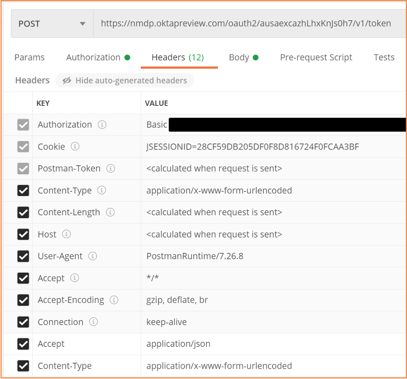
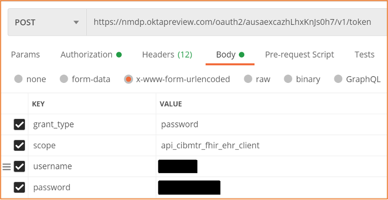
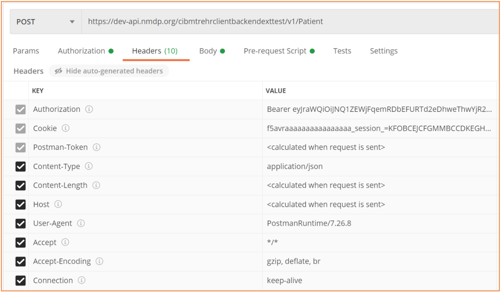
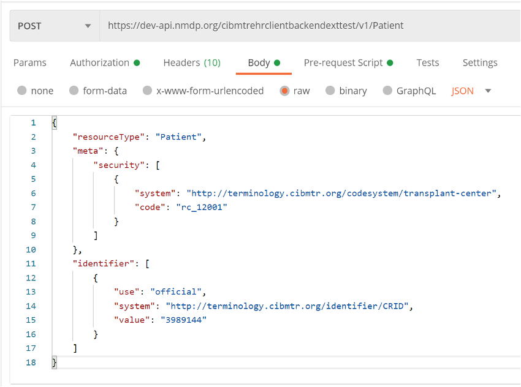
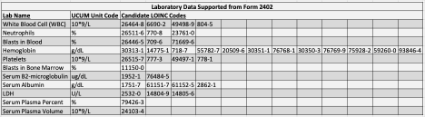

CIBMTR Reporting Implementation Guide
0.1.4a - Trial Use 1
CIBMTR Reporting Implementation Guide
0.1.4a - Trial Use 1
CIBMTR Reporting Implementation Guide - Local Development build (v0.1.4a). See the Directory of published versions
CIBMTR collects clinical research data related to stem-cell transplants including patient characteristics, disease parameters, procedures, treatments, and longitudinal outcomes. Typically, this data is collected using an online form called FormsNet and populated by a data manager associated with a transplant center or hospital. CIBMTR is committed to minimizing the data collection effort for transplant centers and data managers and is actively working to collect data electronically from transplant center Electronic Health Records (EHR) systems. CIBMTR is engaged in a program called the Data Transformation Initiative (DTI) where electronic data is collected and used to prepopulate the questions on the applicable CIBMTR forms. Prepopulating form questions reduces the number of questions required by the data managers to subsequently answer manually.
This document describes how to submit HL7 FHIR data electronically using available CIBMTR REST APIs. Data for each patient is submitted using the HL7 FHIR exchange protocol in JSON or XML format. The REST APIs are available for integration into a custom client architecture or for submission using a manual HTTP client such as Postman. CIBMTR refers to data submitted directly to the CIBMTR FHIR API using a custom client as Direct FHIR data submission.
The process for submitting production data to CIBMTR includes three sequential steps:
Once electronic data has been submitted via the Direct FHIR service API, the Data Manager can login to the FormsNet interface to complete the data submission process for form prepopulation. Associated with each form are important clarifying contextual questions that must be answered to provide necessary information for associating the dates of the electronic data with the key dates of interest on the form. Answering these contextual questions within FormsNet initiates the electronic data form prepopulation for a specific form.
A CIBMTR relationship manager or technical lead can initiate a request for API credentials. CIBMTR uses OAuth2.0/OpenID (OIDC) for authentication and access management. This process involves making a request to a third-party authorization server to receive a token. The token is then passed to the CIBMTR API URL in the request header. The following information will be provided by CIBMTR and is necessary for requesting an authorization token :
Different sets of credentials will be provided for the CIBMTR test and production environments.
To request an authentication token for the test environment, the third-party authorization server URL is:
POST https://nmdp.oktapreview.com/oauth2/ausaexcazhLhxKnJs0h7/v1/token
or:
POST https://nmdp.oktapreview.com/oauth2/aus3ck6q30qmOdpMb1t7/v1/token
To request an authentication token for the production environment, the third-party authorization server URL is:
POST https://nmdp.okta.com/oauth2/ausaexcazhLhxKnJs0h7/v1/token
or:
POST https://nmdp.okta.com/oauth2/aus3ck6q30qmOdpMb1t7/v1/token
The header of the POST request to the authorization server must have an authorization string. The string is constructed by base64 encoding the Application Client ID, a colon, and the Application Client Secret. The encoded string is then appended to the word Basic . For example, here is a snippet of psuedocode showing this.
const auth_string = "Basic " + base64("<Application Client ID>" + ":" + "<Application Client Secret>")
An example of the header parameters for the POST request to the authorization server using the Postman API client tool (https://www.postman.com) is shown in Figure 1. In the figure, the authorization string is blacked out. Notice the space between the base 64 encoded string and the string prefix, Basic.
|  |
|---|
| Figure 1: Example header information for the POST request to the authorization server |
Figure 2 below shows the required fields in the body of the POST request to the authorization server API. The value for the username key is the CIBMTR Service Account Username provided by CIBMTR. The value for the password key is the CIBMTR Service Account Password. The grant_type key and the scope key have the same values as shown in Figure 2. The response to the POST request will return a JSON object that includes a base64 encoded token. The token can be a long character string (over 1000 chars).
|  |
|---|
| Figure 2: Required POST fields to submit for the authorization token. |
Once the token has been received, a request to the CIBMTR Direct FHIR service API can be made. Tokens are valid for 30 minutes in the production environment, but last up to 24 hours in the test environment. Applications must cache and re-use tokens until they are about to expire because Okta rate limits requests for new tokens. One workable strategy is to obtain a new token every 25 minutes.
|  |
|---|
| Figure 3: Example CIBMTR Direct FHIR API request using a bearer authorization token in the header of the request. |
To make a request to the CIBMTR Direct FHIR Backend API, include the token in the header as the authorization key value of the request along with the word Bearer in front of it, as shown in Figure 3.
Submitting data to CIBMTR via the Direct FHIR service API involves a four-step process for each patient:
Before we dive into the workflow, there are a couple of things to be aware of: the <base urls> and security tags.
Base URLs
For the CRID API, and all FHIR STU3 resources, use these <base URLs> in the examples that follow.
Test Environment (to be used for all development work)
https://dev-api.nmdp.org/cibmtr-fhir-backend-exttest/v1
Production Environment
https://api.nmdp.org/cibmtrehrclientbackend/v1
Security tags
Access credentials have been provisioned to allow access to patients and data that is identified to a particular transplant center. To enforce this, the Direct FHIR API requires that all FHIR resources contain a meta.security element containing the center number in a FHIR CodeableConcept. This has the form of:
"meta": {
"security": [ {
"system": "http://cibmtr.org/codesystem/transplant-center",
"code": "rc_<CCN>"
} ]
}
The meta.security.code is a string containing rc_ followed by the CIBMTR Center Number (CCN). In the above example, replace <CCN> with your center number. Examples of FHIR resources containing this element are found in the sections below.
The client must search for a patient that has been previously registered with CIBMTR, or register a new patient. In either case, the client will receive from the CRID service a CIBMTR Research Identifier (CRID) to be used as a patient resource identifier for all subsequent FHIR data submissions. CIBMTR exposes a special service API to handle the submission of personally identifiable information (PII). Data submitted via the externally available CRID API endpoint has special protections and exposure within CIBMTR to avoid unnecessary handling of PII. For all subsequent FHIR data submissions, the CRID is used to identify the patient and any PII is removed from FHIR resources before being stored on CIBMTR FHIR servers.
The CRID API uses a PUT request at the following case-sensitive endpoint URLs:
PUT <base URL>/CRID
The authorization key and bearer token must be included in the request as mentioned in the previous section. For the body of the PUT request, the following data fields are requested:
Five required attributes
Optional attributes (possibly present)
Complete list of payload options for CRID registration is shown below. Note that this is not a FHIR JSON object, but rather is a CIBMTR specific JSON format.
{
"ccn": "string",
"patient": {
"firstName": "string",
"lastName": "string",
"birthDate": "string",
"gender": "string",
"ssn": "string",
"mothersMaidenName": "string",
"race": ["string"],
"ethnicity": "string",
"nmdpRid": 0,
"ebmtCic": "string",
"cibmtrIubmid": "string",
"cibmtrTeam": 0,
"ebmtId": "string"
}
}
CRID Race Codes
| Race Value Code | Description |
|---|---|
| 1002-5 | American Indian or Alaska Native |
| 2028-9 | Asian |
| 2054-5 | Black or African American |
| 2076-8 | Native Hawaiian or Other Pacific Islander |
| 2106-3 | White |
| ASKU | Not Reported |
| UNK | Unknown |
CRID Ethnicity Codes
| Ethnicity Value Code | Description |
|---|---|
| 2135-2 | Hispanic or Latino |
| 2186-5 | Non Hispanic or Latino |
| UNK | Unknown |
Because the CRID API is available as a PUT request, submitting the same data twice does not re-register the patient, but rather will retrieve the same CRID number registered previously. The CRID API will attempt to perform partial “fuzzy” matches based on data submitted to avoid re-registering the same patient with two different CRID numbers.
The response payload of the CRID Service API is a JSON object that contains the CRID number (lower pane in Figure 4). The CRID number is then used for all other data references to the registered patient.
 |
|---|
| Figure 4: Example CRID registration PUT request with JSON body payload (top pane) and response payload (bottom pane) |
A FHIR Patient resource with an identifier containing the CRID must exist to be used as a subject reference in Observation or other resources. To prevent multiple identical Patient resources from being created, the client must first check to see if it already exists.
To search for Patient resource with a specific CRID, use this GET request (all one line)
GET <base URL>/r3/Patient?
_security=http://cibmtr.org/codesystem/transplant-center|rc_<CCN>
&identifier=http://cibmtr.org/identifier/CRID|<CRID>
If the response shows a searchset result with a total of 0, then a Patient resource with that CRID has not been created, and a new Patient resource must be created. In this case, go on to Step 3.
If the response shows a total of one or more, then at least one Patient with that CRID already exists. In this case, skip Step 3, and go on to Step 4. If more than one Patient was found, then it suggests that someone created a Patient without checking to see if it first exists.
A note about special characters: The FHIR search parameters sometime include special characters such as the pipe character (“|”). Often, these need to be replaced with url-encoded character strings. In this case, “|” is replaced by “%7C” in the values for the keys.
The response below shows one Patient resource, and that resource has an id of 46986.
|  |
|---|
| Figure 5: Example of response of Patient search |
The ‘id’ should be used in all subject.references for all subsequent Observations that are submitted for this Patient. This would have the form of:
"subject": {
"reference": "Patient/<id>"
}
Replace <id> with the Patient.id found in the search.
To drive home the point, the
Patient.id is a local server id, and is used as a subject.reference in other FHIR resources.Patient.identifier is a business identifier and the where the CRID is located.If the Patient FHIR resource doesn’t already exist, it must be created before any other FHIR resources. The Patient FHIR resource ID is part of the response to the Patient POST request. The resource ID is unique to the CIBMTR FHIR server and is used to reference the Patient subject on all subsequently submitted FHIR resources. The resource ID is assigned by the FHIR server and is different from the Patient.identifier section of the FHIR resource. The Patient ID is NOT a Patient CRID.
The Direct FHIR Service API uses a POST request to submit a Patient resource at the following case-sensitive endpoint URLs:
POST <base URL>/r3/Patient
The authorization key and bearer token must be included in the request as mentioned in the previous section. FHIR JSON submissions should also include a content-type key in the header with value: application/fhir+json.
The Patient FHIR resource usually contains the demographics data for the patient, however, since the demographics data is already submitted during the CRID registration process, there are only three primary components necessary in the Patient FHIR resource:
security label (describe above) within the meta section of the Patient resource must contain the CIBMTR Center Number (CCN) prepended with rc_ and associated with the codesystem as shown in Figure 6.text.status section that should have the narrative code of empty if no text narrative is provided. An example is shown in Figure 6.identifier section of the Patient resource as shown in Figure 6. |
|---|
| Figure 6: Example POST request to submit a Patient FHIR resource and the required FHIR sections in the body of the request |
PII information should be avoided as part of the Patient resource. However, the Direct FHIR service API will remove PII information, including any that might be contained in text.div or other sections of the resource before storing it on the FHIR server.
The response after submitting a Patient resource request, includes the Patient resource ID in the header of the response (see Figure 7). The Location section of the response header includes a URL reference for the Patient resource on the CIBMTR FHIR server and the Patient resource ID is in the URL (circled in red in Figure 7). The Patient resource ID is necessary for submitting other FHIR resources to the Direct FHIR service API, but if the ID for a Patient resource previously submitted is not known, the following GET request can be submitted to the API to retrieve the Patient resource for a given CRID:
|  |
|---|
| Figure 7: Example FHIR Patient submission response with the Patient resource ID found in the response header Location |
Preferred Patient resource While including the CRID identifier, meta.security tag, and empty text element is the bare minimum for creating a Patient resource, we prefer to have some additional data present to help with resource management. These include date of birth, gender, and race & ethnicity information. Race and ethnicity must be reported as described in the FHIR US-Core Implementation Guide:
https://www.hl7.org/fhir/us/core/StructureDefinition-us-core-race.htmlhttps://www.hl7.org/fhir/us/core/StructureDefinition-us-core-ethnicity.htmlSee the following for an example that using these elements with data as found for registering for the CRID above.
{
"resourceType": "Patient",
"meta": {"security": [
{
"system": "http://cibmtr.org/codesystem/transplant-center",
"code": "rc_12002"
}
]},
"text": {"status": "empty"},
"identifier": [
{
"use": "official",
"system": "http://cibmtr.org/identifier/CRID",
"value": "4598886"
}
],
"gender": "male",
"birthDate": "1925-07-04",
"extension": [
{
"extension": [
{
"url": "ombCategory",
"valueCoding": {
"system": "urn:oid:2.16.840.1.113883.6.238",
"code": "2106-3",
"display": "White"
}
},
{
"url": "text",
"valueString": "White"
}
],
"url": "http://hl7.org/fhir/us/core/StructureDefinition/us-core-race"
}
]
}
Note that ethnicity is not included in the above example. This is because valueset for the US-Core Ethnicity Extension does not include Unknown which was submitted to the CRID service. To be conformant to the FHIR US-Core Implementation Guide, it must be either “Hispanic or Latino” or “Non Hispanic or Latino.” Please contact us if you have any questions on how to implement these extensions.
Here’s an example with ethnicity included:
{
"resourceType": "Patient",
"meta": {"security": [
{
"system": "http://cibmtr.org/codesystem/transplant-center",
"code": "rc_12002"
}
]},
"text": {"status": "empty"},
"identifier": [
{
"use": "official",
"system": "http://cibmtr.org/identifier/CRID",
"value": "4598886"
}
],
"gender": "male",
"birthDate": "1925-07-04",
"extension": [
{
"extension": [
{
"url": "ombCategory",
"valueCoding": {
"system": "urn:oid:2.16.840.1.113883.6.238",
"code": "2106-3",
"display": "White"
}
},
{
"url": "text",
"valueString": "White"
}
],
"url": "http://hl7.org/fhir/us/core/StructureDefinition/us-core-race"
},
{
"extension": [
{
"url": "ombCategory",
"valueCoding": {
"system": "urn:oid:2.16.840.1.113883.6.238",
"code": "2135-2",
"display": "Hispanic or Latino"
}
},
{
"url": "detailed",
"valueCoding": {
"system": "urn:oid:2.16.840.1.113883.6.238",
"code": "2184-0",
"display": "Dominican"
}
},
{
"url": "text",
"valueString": "Hispanic or Latino"
}
],
"url": "http://hl7.org/fhir/us/core/StructureDefinition/us-core-ethnicity"
}
]
}
The Direct FHIR service API uses a POST request to submit an Observation resource at the following case-sensitive endpoint URLs :
POST <base URL>/r3/Observation
The authorization key and bearer token must be included in the request as mentioned in the previous section. FHIR JSON submissions should also include a content-type key in the header with value: application/fhir+json.
CIBMTR is continually expanding support for more electronic data to pre-populate CIBMTR forms. The list of data that can be submitted and used to populate CIBMTR forms is provided in Appendix 1. When mapping electronic data to clinical codes, it is imperative that the correct code is used. It is recommended that someone with a clinical background review the mappings of EHR data to clinical codes to ensure accuracy.
An example of an Observation FHIR resource is shown in Figure 8. The basic structure of this FHIR resource is the same for all the different types of labs. Important areas to note:
• meta Section – This is the metadata section of the resource and includes the same security label as defined in the Patient resource. This security label is required and must include the center specific CCN.
• category Section – This section uses the HL7 Observation category code to enable category-based searches. Currently, only data from the laboratory category is supported. This section is optional.
• code Section – The clinical concept code for the measured quantity is included in this section. For laboratory data, the primary clinical vocabulary is LOINC . LOINC codes can have different specific applied concepts depending on a variety of lab parameters such as: collection method, measurement method, sub-types, and naming conventions. A list of LOINC codes for each of the supported lab types is included in Appendix 1. Choosing the correct code can require clinical interpretation, therefore, technical implementers are encouraged to get clinician review of the selected LOINC code. This section is required.
• subject Section – Each Observation resource must reference the patient associated with the lab values. The subject.reference allows the Observation resource to point to the Patient using the Patient resource id using the Patient/<id> format. This section is required.
• effectiveDateTime – This is a timezone aware datetime format of the date of collection of the lab sample. This section is required.
• valueQuantity – The actual value of the measured lab is represented here as a decimal valued number. The unit system and code are also specified. The CIBMTR data translation engine will convert the values and units after submission if necessary. The units system and code should be UCUM. This section is required.
• referenceRange – If the high and low range for this lab are known, they can be defined in this section using the same data format as the valueQuantity section. This section is optional but important for answering some questions on the CIBMTR forms.
 |
|---|
| Figure 8: Example FHIR Observation submission |
To search for all Observation resources on the CIBMTR FHIR server for a given CRID, see the below GET request API URL:
GET <base URL>/r3/Observation?patient.identifier=<CRID>
Multiple Observation FHIR resources can be submitted together in one Bundle FHIR resource. The CIBMTR Direct FHIR service API supports FHIR transaction bundles. The process for submitting a transaction Bundle FHIR resource is the same as submitting a single Observation FHIR resource, except for the bundle is sent to the base URL for the FHIR version for processing. If the bundle is sent to the Bundle end point, then it is stored, but not processed.
POST <base URL>/r3
An example of the structure of a transaction JSON Bundle FHIR resource is shown below. Each Observation resource is an element of the “entry” array. To avoid API timeout issues, bundles should be limited to 50 Observations or less.
{
"resourceType": "Bundle",
"type": "transaction",
"entry": [
{
"resource": { Observation Resource Here
},
"request": {
"method": "POST",
"url": "Observation"
}
},
{
"resource": { Observation Resource Here
},
"request": {
"method": "POST",
"url": "Observation"
}
},
{
"resource": { Observation Resource Here
},
"request": {
"method": "POST",
"url": "Observation"
}
}
]
}
The example API calls in this document are taken from the Postman API client. Postman allows a user to manually configure and test connecting to and interacting with different APIs. Using Postman is a great way to understand an API, see the responses, and submit limited data manually. Once the API is well understood, then a custom client can be implemented programmatically using any number of REST client libraries.
Postman includes the concept of a collection of requests. A collection file can be imported into Postman. CIBMTR has a collection of requests that accomplish all the tasks in this user guide. The collection is available upon request.
 |
|---|
| Figure 9: Example POSTMAN collection of requests available from CIBMTR |
Postman also includes the option to run a pre-request script before making an API request. The CIBMTR collection includes a pre-request script that can get the authentication token automatically each time a request is made. These and other simplifications of the process make Postman an excellent tool for exploring, developing, and using the CIBMTR Direct FHIR service APIs for submitting patient data.
NOTE: Requesting a new token for manual requests should not cause Okta to rate-limit these requests. However, automated systems must cache and re-use the authentication token to avoid errors. Tokens are valid for 30 minutes in the production environment.
CIBMTR currently supports submission of lab measurements collected prior to and post-HCT transfusion. When submitting FHIR Observation resources, one of the below supported LOINC codes must be used in the code section of the resource. Selecting the correct LOINC code to use to represent the clinical concept of the lab data should be done by someone clinically trained to understand the lab measurement and corresponding LOINC code. Lab quantities should always include the corresponding unit of measure coded using the UCUM standard vocabulary.
A FHIR ValueSet representing these codes can be found on https://fhir.nmdp.org/ig/cibmtr-reporting/ValueSet-cibmtr-priority-variables-2022.html
Can multiple patients be registered at the same time using the CRID Service API?
No, the API currently supports one CRID registration at a time.
Can demographic data be changed, augmented, or updated using the CRID Service API?
No, contact CIBMTR to have the demographics data changed for a previously registered CRID
What can I do if I forget the CRID for a particular patient?
Send the same PUT request to the CRID Service API with the same patient demographic information and the CRID Service API will return the corresponding CRID number for that patient.
What are the FHIR resources that are supported by the Direct FHIR service API?
Patient, Observation
What forms are currently supported for prepopulation?
The DTI program is engaging in prepopulating the data in Appendix 1 across all forms. New supported data types will be supported approximately quarterly.
What if my lab data is not in the preferred unit of measure indicated on a form?
You may choose to perform the unit/value conversion yourself prior to the data submission, or submit the data with the corresponding UCUM code, and the CIBMTR data translation engine will attempt to perform the conversion after submission.
Can the Observation resources be submitted as a FHIR bundle?
Yes, transaction bundles are currently supported.
Python
#!/usr/bin/env python3
import requests
from requests.auth import HTTPBasicAuth
clientId = '<Application Client ID>'
clientSecret = '<Appplication Client Secret>'
serviceAccountUsername = '<CIBMTR Service Account Username>'
serviceAccountPassword = '<CIBMTR Service Account Password>'
scope = '<Application Scope>'
headers = {'Content-Type': 'application/x-www-form-urlencoded',
'Accept': 'application/json'}
data = {'grant_type':'password',
'scope': scope,
'username':serviceAccountUsername,
'password':serviceAccountPassword}
r = requests.post('https://nmdp.oktapreview.com/oauth2/ausaexcazhLhxKnJs0h7/v1/token',
auth=HTTPBasicAuth(clientId, clientSecret),
data=data,
headers=headers)
accessToken = r.json()["access_token"]
print(accessToken)
bash script using curl, base64, and jq
#!/bin/bash
username='<CIBMTR Service Account Username>'
password='CIBMTR Service Account Password>'
clientid='<Application Client ID>'
clientsecret='<Application Client Secret>'
clientscope='<Application Scope>'
auth_string="Basic $(echo -n ${clientId}:${clientSecret}|base64)"
curl -s --location \
--request POST 'https://nmdp.oktapreview.com/oauth2/ausaexcazhlhxknjs0h7/v1/token' \
--header 'Accept: application/json' \
--header 'Content-Type: application/x-www-form-urlencoded' \
--header "Authorization: ${auth_string}" \
--data-urlencode "grant_type=password" \
--data-urlencode "scope=${clientScope}" \
--data-urlencode "username=${username}" \
--data-urlencode "password=${password}" \
| jq -r '.access_token'
Python
#!/usr/bin/env python3
import json
import requests
from pathlib import Path
# Replace patient variable with your patient demographic data.
# Below is just an example.
patient = {
"ccn": "12002",
"patient": {
"firstName": "Steve",
"lastName": "Rogers",
"birthDate": "1925-07-04",
"gender": "M",
"ssn": "098-76-5432",
"race": ['2106-3'],
"ethnicity": "UNK"
}
}
tokenfile = Path('token.txt') # Bearer token was previously captured in token.txt
authstring = 'Bearer ' + tokenfile.read_text()
headers = {'Authorization': authstring,
'Content-Type': 'application/json'}
r = requests.put('https://dev-api.nmdp.org/cibmtrehrclientbackendexttest/v1/CRID',
json=patient,
headers=headers)
if r:
print(json.dumps(r.json(), indent=4))
else:
print(r.status_code)
Python
#!/usr/bin/env python3
import sys
import json
import requests
from pathlib import Path
# replace <CRID> with actual CRID
crid = "<CRID>"
# Bearer token captured in token.txt
tokenfile = Path('token.txt')
authstring = 'Bearer ' + tokenfile.read_text()
headers = {'Authorization': authstring}
identifier = 'http://cibmtr.org/identifier/CRID|' + crid
security = 'http://cibmtr.org/codesystem/transplant-center|rc_12002'
payload = {
'identifier': identifier,
'_security': security
}
r = requests.get('https://dev-api.nmdp.org/cibmtr-fhir-backend-exttest/v1/r3/Patient',
params=payload,
headers=headers)
if r:
# print(json.dumps(r.json(), indent=4))
print(r.text)
else:
print(r.status_code)
Python
#!/usr/bin/env python3
import sys
import json
import requests
from pathlib import Path
if len(sys.argv) < 2:
sys.exit("Usage: python postPatient.py <FHIR Patient resource json file>")
fhirjsonfile = Path(sys.argv[1])
patientFHIR = fhirjsonfile.read_text()
# Bearer token captured in token.txt
tokenfile = Path('token.txt')
authstring = 'Bearer ' + tokenfile.read_text()
headers = {'Authorization': authstring,
'Content-Type': 'application/fhir+json'}
r = requests.post('https://dev-api.nmdp.org/cibmtr-fhir-backend-exttest/v1/r3/Patient',
data=patientFHIR,
headers=headers)
if r:
# print(json.dumps(r.json(), indent=4))
print(r.headers['Location'])
print(r.text)
else:
print(r.status_code)
print(r.headers)
print(r.text)
Python note: POSTing an Observation is just like POSTing a Patient. You just need to change the endpoint to Observation.
#!/usr/bin/env python3
import sys
import json
import requests
from pathlib import Path
if len(sys.argv) < 2:
sys.exit("Usage: python postObservation.py <FHIR Observation resource json file>")
fhirjsonfile = Path(sys.argv[1])
observation = fhirjsonfile.read_text()
# Bearer token captured in token.txt
tokenfile = Path('token.txt')
authstring = 'Bearer ' + tokenfile.read_text()
headers = {'Authorization': authstring,
'Content-Type': 'application/fhir+json'}
r = requests.post('https://dev-api.nmdp.org/cibmtr-fhir-backend-exttest/v1/r3/Observation',
data=observation,
headers=headers)
if r:
# print(json.dumps(r.json(), indent=4))
print(r.headers['Location'])
print(r.text)
else:
print(r.status_code)
print(r.headers)
print(r.text)
Python
#!/usr/bin/env python3
import sys
import json
import requests
from pathlib import Path
if len(sys.argv) < 2:
sys.exit("Usage: python searchObservationCRID.py <CRID>")
# Bearer token captured in token.txt
tokenfile = Path('token.txt')
authstring = 'Bearer ' + tokenfile.read_text()
headers = {'Authorization': authstring}
identifier = 'http://cibmtr.org/identifier/CRID|' + sys.argv[1]
security = 'http://cibmtr.org/codesystem/transplant-center|rc_12002'
payload = {
'patient.identifier': identifier,
'_security': security
}
r = requests.get('https://dev-api.nmdp.org/cibmtr-fhir-backend-exttest/v1/r3/Observation',
params=payload,
headers=headers)
if r:
print(json.dumps(r.json(), indent=4))
else:
print(r.status_code)